SWARAGAM - PRESERVING TRADITION THROUGH DISCOVERY
Swaragam is a visual and interactive digital sound library dedicated to the preservation and discovery of Balinese traditional music. Unlike standard streaming platforms that prioritize trending hits, Swaragam is built on a foundation of cultural context, providing users with the history, ritual significance, and technical breakdown of every track. It serves as a bridge between the oral traditions of the past and the digital creators of the future, transforming a fragmented archive into an immersive educational experience.
ROLE
UI & UX Designer
TIMELINE
2025
TOOLS
Figma, Miro, Adobe Photoshop

STARTING WITH A PERSON
Swaragam began with a person that we called "Ratna", a traditional musician who performs gamelan melodies during evening ceremonies and represents the living heartbeat of Balinese culture. However, her story is one of quiet anxiety: she loves the traditions she carries but struggles to find the time to practice amidst modern household chores. Her biggest fear isn't just a missed note; it's the fear that the "old songs" will disappear with her generation because they aren't being documented for the youth.
By anchoring the project in Ratna's emotional reality, we shifted the focus from "building a music app" to "solving a cultural crisis". This initial persona allowed us to identify that the problem was a lack of accessibility and documentation. We realized that for the music to survive, it needed to be as easy to find and learn as modern pop music, without losing its sacred soul.
User Persona: Ratna's fear of cultural erasure became the primary North Star for our design strategy.
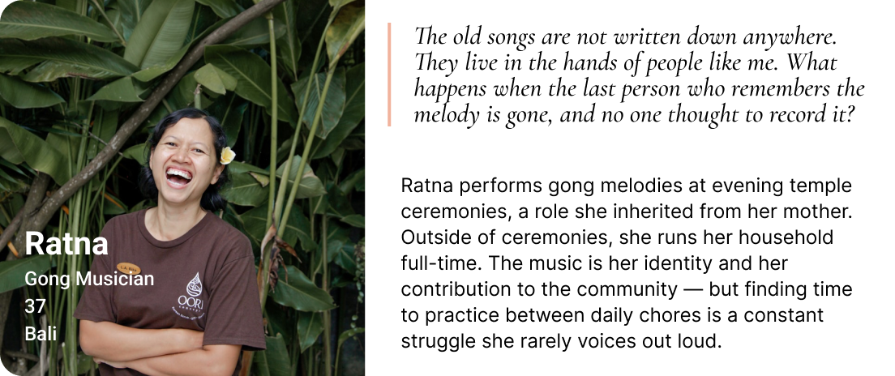
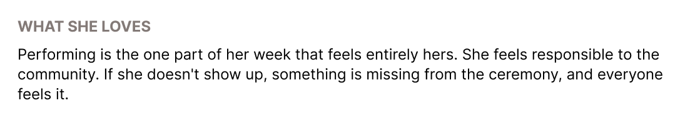
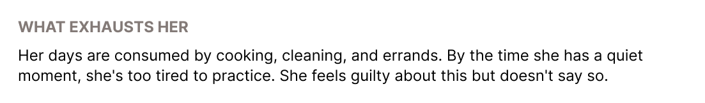
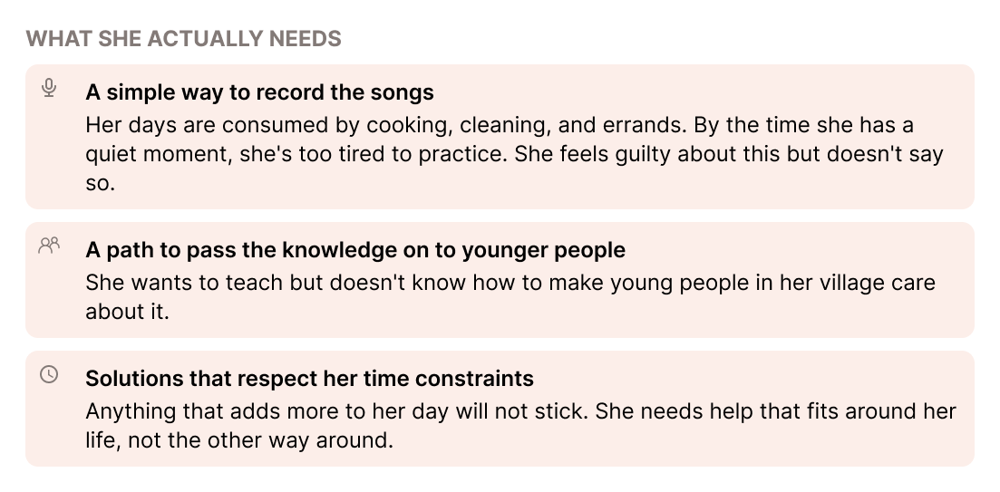
WHY TRADITION IS AT RISK
To uncover why Balinese music is fading digitally, we conducted deep-dive interviews with eight stakeholders across the ecosystem, including a Sanggar teacher, a university music professor, performers, dancers, and a Gamelan community member in Australia. This diverse local and international cohort revealed that the primary threat to the art form is an Accessibility Paradox: a clash between ancient oral pedagogy and modern digital fragmentation.
Our research synthesized three critical friction points that leave Balinese traditional music vulnerable:
- The Fragility of Oral Architecture: Gamelan lacks standard written notation; instruction is entirely face-to-face through master-student mimicry. When master musicians pass away without active students, entire undocumented village compositions vanish forever.
- The "YouTube Trap" & Search Deficit: Performers and dancers heavily rely on YouTube or unorganized smartphone audio passed down through generations due to a total lack of high-quality, studio-grade digital archives. Furthermore, discovery is crippled by a steep keyword barrier—if a user does not know the exact, highly technical name of a song or ensemble, it is unsearchable. There is no mechanism to browse casually by emotional "vibes," tempo, or creative intent.
- The "Fear of Misuse" Barrier: Modern musicians and international creators express deep anxiety regarding cultural appropriation. Gamelan is strictly tied to specific sacred or secular contexts. Because mainstream platforms strip audio of its spiritual intention, era, and regional boundaries, creators frequently abandon these sounds out of fear of disrespectful implementation.
While the local Sanggar remains the vital backbone keeping this music alive, Swaragam is designed to step in as its digital translator—removing search guesswork with an empathetic discovery architecture and uncompressed audio quality.
Insight Synthesis: Triangulating qualitative data from 8 global and local experts to pinpoint the structural and platform vulnerabilities of Balinese music preservation.
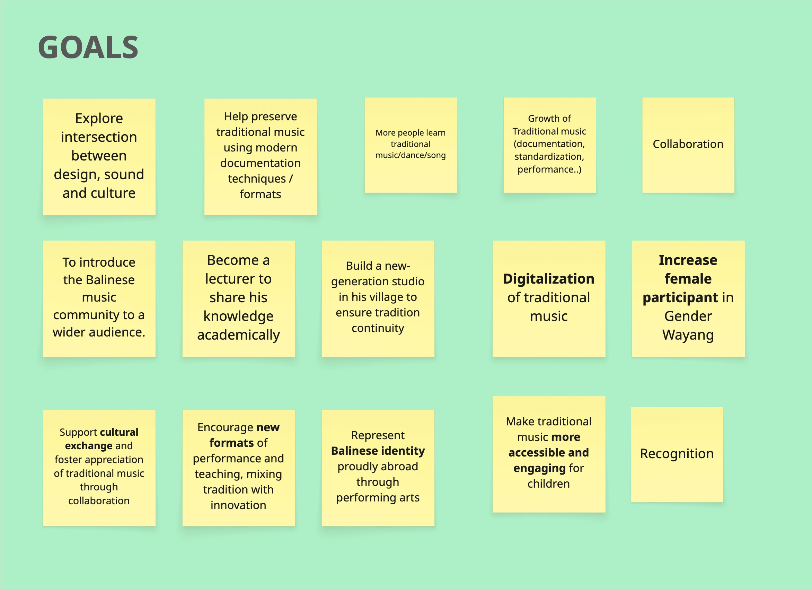
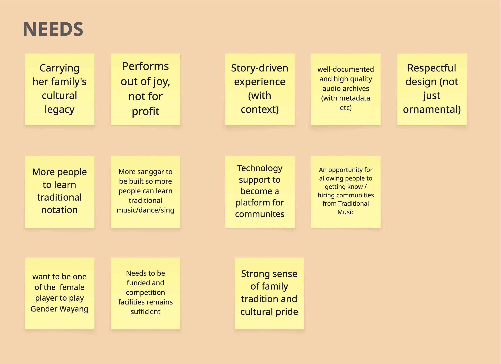
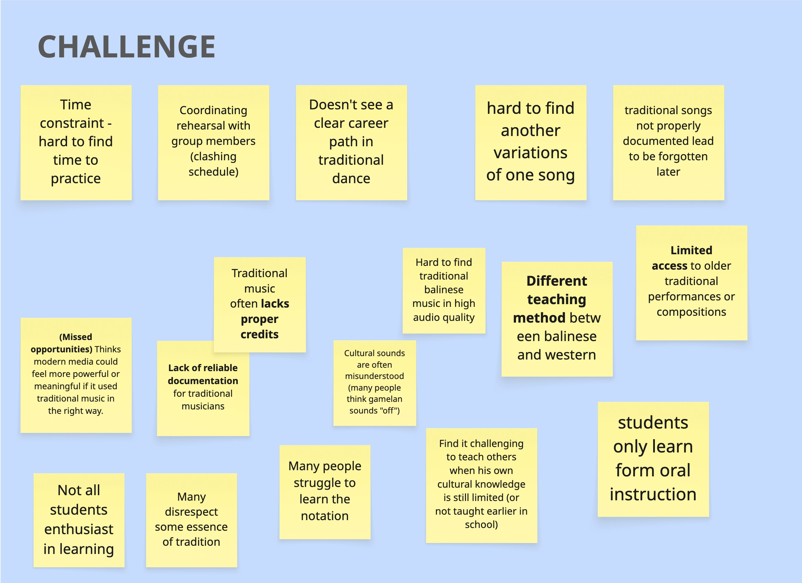
THE STRATEGIC BRIDGE
While Ratna is the source of the music, our research revealed a second critical user: Rio, the Indie Game Developer. Rio represents the modern "bridge". He wants to integrate Gamelan sounds into his fantasy RPG games to create an authentic Indonesian atmosphere, but he is terrified of cultural misinterpretation. He spends hours bouncing between blogs and YouTube, frustrated by the lack of high-quality audio files that include necessary metadata like ritual context or instrument types.
Mapping Rio's User Journey was a turning point for the project. We saw his emotional curve drop during the "Cultural Check" phase, where his creative momentum stopped because he couldn't find a trustworthy source to tell him if a specific track was appropriate for his game's narrative. This insight moved Swaragam's vision from a simple practice tool for musicians into a context-rich discovery platform for all creators.
The Opportunity Gap: Rio's journey highlighted the need for a platform that provides both high-quality audio and cultural validation.
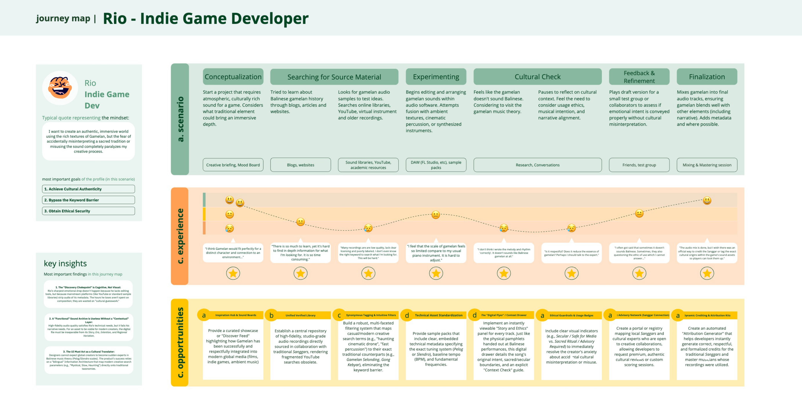
TRANSLATING ORAL TRADITION INTO DIGITAL
The core structural challenge of Swaragam was organizing a musical tradition that lacks written notation into a structured mobile interface. Armed with the affinity mapping data from our user interviews, we chose to avoid standard streaming layouts that force users to search by precise artist or album names. Because our research showed that Balinese music relies heavily on localized Sanggar variations and suffers from high keyword barriers, the navigation was built around Context, Region, and Vibe.
To lower the barrier for non-experts while maintaining accuracy for practitioners, the homepage uses low-friction audio snippets. This layout allows users to hear the emotional resonance of a track before needing to decode traditional terminology. During the low-fidelity wireframing stage, I iterated heavily on the "Song Detail Screen" hierarchy. The primary architectural debate was deciding how to present the extensive metadata—such as the story, intention, and village origin—without overwhelming the functional audio playback controls.
Low-Fidelity Iterations: Structuring a dual-purpose layout that serves both technical playback looping and contextual story discovery.
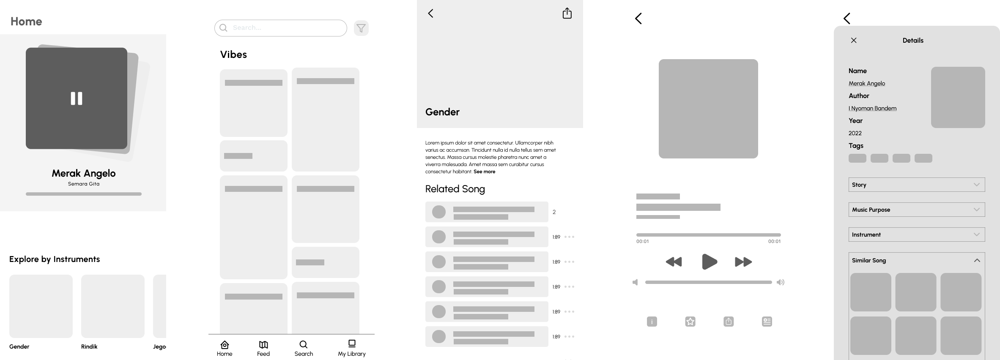
DESIGN EXECUTION
Moving to the final high-fidelity screens required visual refinement and layout optimization. In the First Iteration, the interface relied on uniform, boxy container cards that lacked visual hierarchy and created clutter around the player controls. The home screen also felt text-heavy and unengaging for an arts platform. To fix this, I dismantled the rigid frames in favor of a clean, edge-to-edge layout that lets the metadata tags stand out. The visual system utilizes a Dark Theme composed of deep charcoal and warm bronze palette which established to ground the app in the physical world—mimicking the specific organic hues of Gamelan wood, aged iron, and gold leaf.
The biggest evolution appears in the final Soundboard feed and tag system. In early drafts, category tags were kind of hidden. In the final version, they are clear, high-contrast visual badges (Sacred, Majestic, Energetic) that immediately guide the user. The player was refined into a floating, transparent module, focusing attention on the uncompressed sound metrics and the slide-up context panel. This layout change ensures that audio playback and cultural context remain connected in the user experience.
First iteration of the hifi
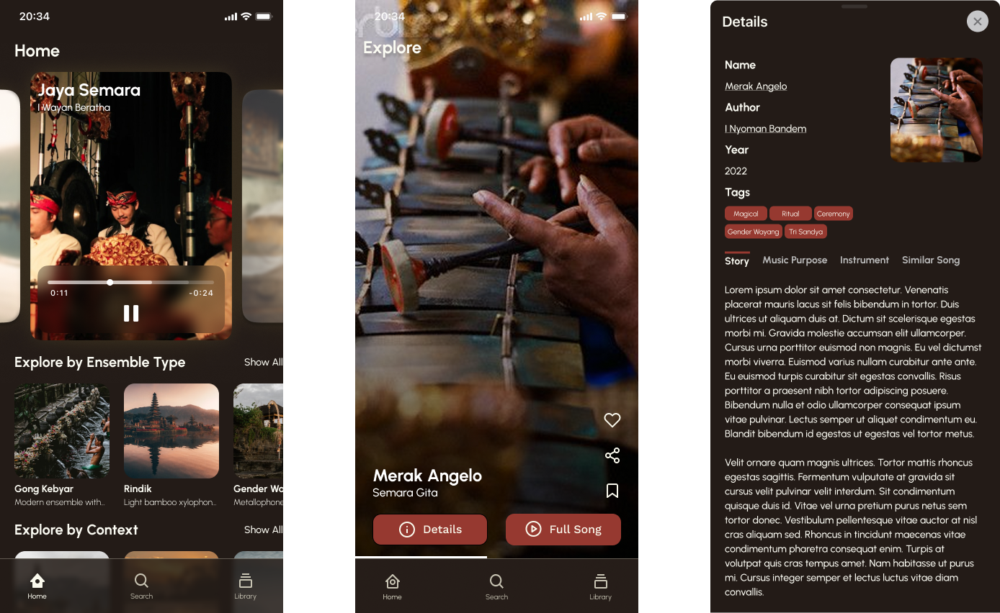
Second iteration of the hifi
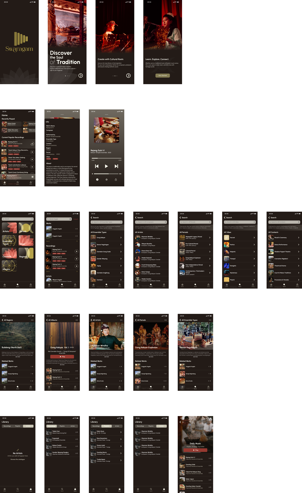
FEATURE DEEP-DIVE
Swaragam is defined by three "Hero Features" that solve the specific pain points we identified in our research:
- 1. The Soundboard (Discover Feed): Inspired by discovery platforms like Pinterest, this scrollable grid uses visual ambiance and "Vibe" tags (e.g., Majestic, Energetic) to allow users to explore sound through emotion rather than just academic genre.
- 2. The Context Panel: This element acts as the digital equivalent of the printed performance flyers mentioned in our interviews. By tapping on the "info" button on an active track reveals the song's background, regional origin, and an explicit indication of whether it belongs to a secular or sacred ritual cycle. This layout ensures that audio files are never stripped of their cultural ethics.
- 3. The Loop Playback Tool: Specifically for practitioners like Ratna, we included a granular looping feature. Since Balinese music is fast and interlocking, this allows students to isolate and repeat complex sections for practice.
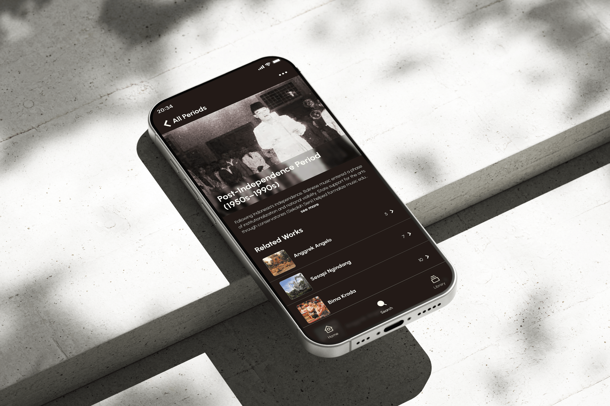